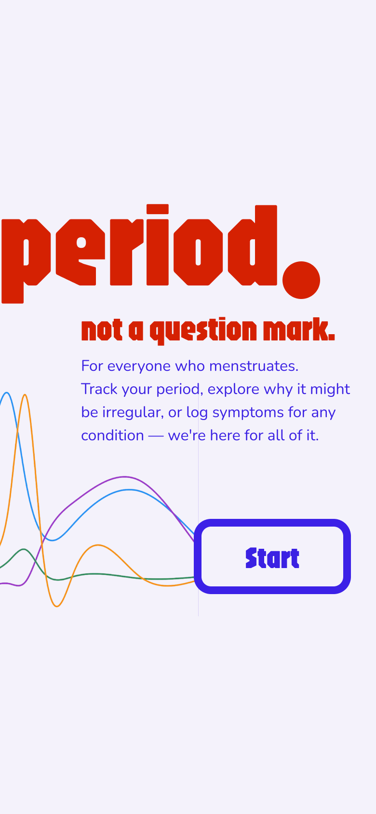
0 · WELCOME
I ran two surveys on cycle tracking — one in Turkish, one in English; 37 people answered. What came out were four findings about the gap between what these apps promise and what people can actually find in them. This page tells the findings first, then the design that grew out of them. So — what's missing?
2 SURVEYS (TR + EN) · 37 RESPONDENTS (24 AGED 25–34 · 12 WITH PCOS) · GOAL: SHARP SIGNALS, NOT STATISTICS
My own surveys couldn't answer it. They only reached people who menstruate and track — and the nearest signal, “partner sharing,” was the least-wanted feature of all: 1 of 37.
So I went where the un-surveyed users already complain in the open: app-store and Trustpilot reviews, plus peer-reviewed HCI research. In a 2025 study of 132 users, 41% of dissatisfaction traced to variable cycle length alone — and 4 of 11 in my Turkish survey had flagged the same problem.
The literature calls it the “cycle regularity imperative” — apps flag a swinging cycle as “irregular,” and users read that as “unhealthy.”
“Even if they tried to predict my cycle taking PCOS into account, they were always off by at least 10 days.”
Clue already ships a no-period tracking mode; Balance and Caria serve menopause; Euki, Drip and Spot On serve trans and non-binary users — while people keep settling back into the built-in Health app. The gap is real, but it isn't empty.
The brand starts with a sentence, not a logo: “period. — not a question mark.” Set in Jaro — a compressed, almost stubborn display face — in signal red, it reads as a statement of fact. The rest of the interface deliberately calms down around it: soft lavender surfaces, glass-like cards, one decisive indigo for every action.
Every value lives as a token — colors, spacing, radii, type — mirrored 1:1 between the code (src/theme) and a Figma variable library, so the prototype and the design file can't drift apart.
The flow opens with the brand statement, then asks only what changes the product: how your period behaves (Regular / Irregular / No period — the mode decision from the research, asked as the second question), relevant conditions like PCOS or endometriosis, last period, duration, hormone therapy. Every step is skippable — “I don't know” and “prefer not to say” are real options, not dark-pattern fine print. And the final screen offers “continue without account” alongside sign-up — a quieter link below the card, but a genuine path into the app.

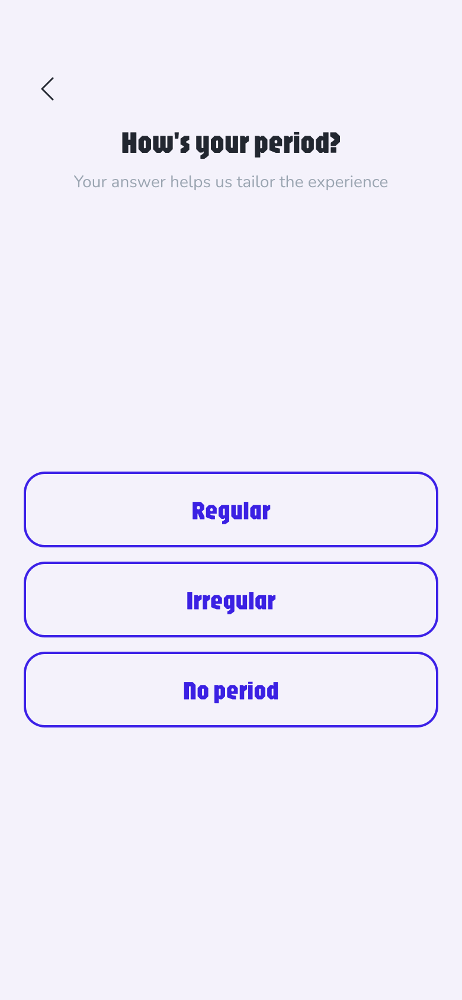
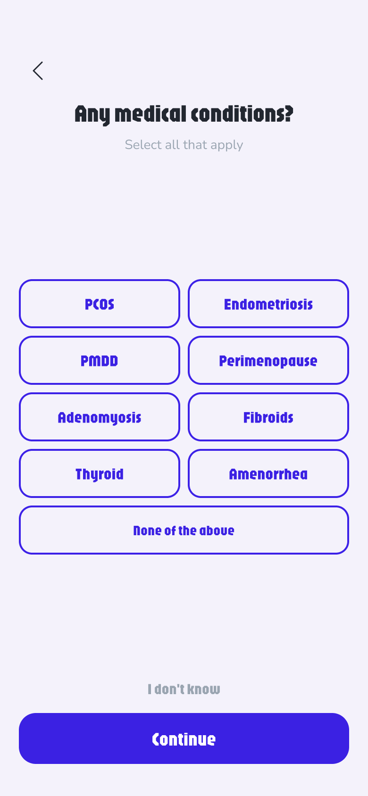
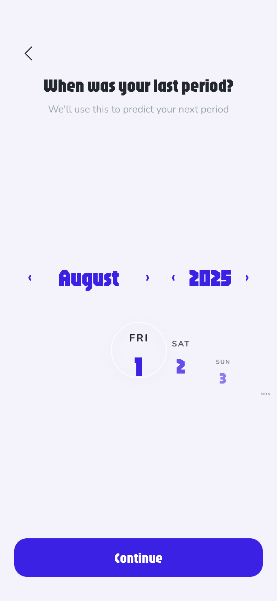
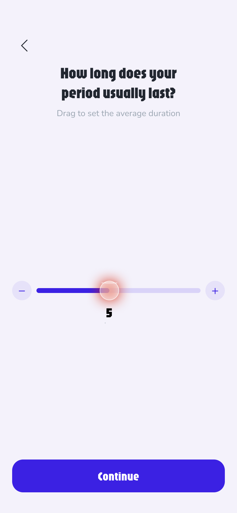
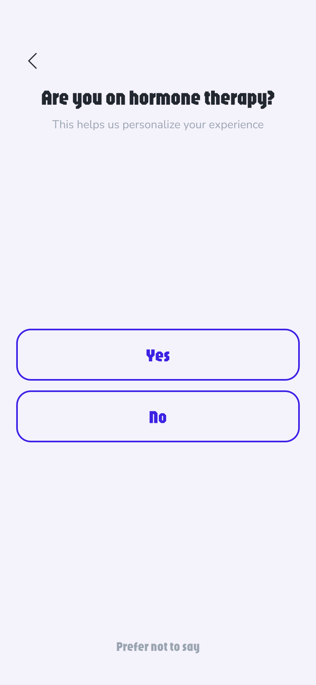
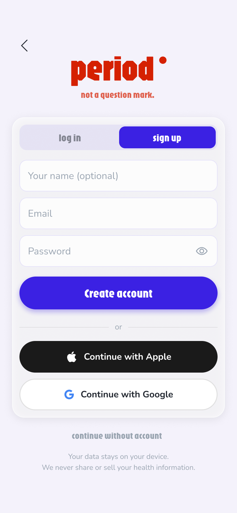
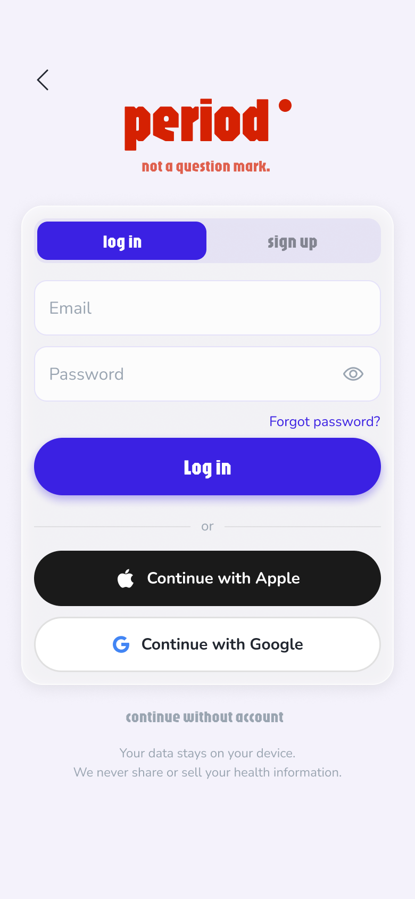
Keep scrolling: the home screen stays put while each element lights up, with the finding it answers right beside it.
Everything 37 people asked for, on a single screen — no tabs, no digging. Keep scrolling: each element lights up in turn, tagged with the finding it answers.
The very first pixel is the status pill — Day 4 · Menstrual, date underneath. No dashboard to parse, no tab to hunt: where you are in your cycle is already on screen the moment the app opens. And it's honest: the pill only appears once you've logged data and a pattern has formed — the app never fakes a prediction it can't back.
The hormone curves paid apps lock behind subscriptions sit here as a free Insights card. And this is where Finding F lands: for irregular cycles, no periods, hormone therapy and perimenopause the pattern runs in different modes — everyone reads their own cycle.
Blog and Meditate close the screen: reachable, never in the way. Articles on PCOS and cycle health, a player that breathes — no feed, no streak shaming, no engagement bait.
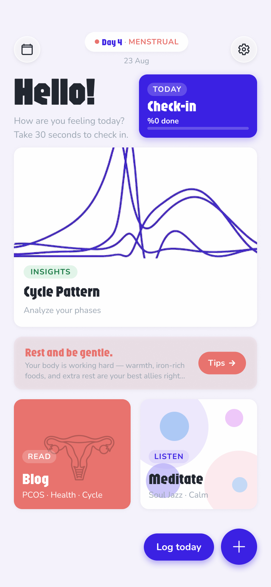
The Check-in card carries a progress bar — a deliberate choice: a half-filled bar creates the feeling of something almost complete, and that pull to finish nudges users to log more — every extra entry is exactly the data an accurate prediction needs. Fill the bar and the card celebrates you — “All logged ✦”. The same action repeats bottom-right as “Log today” and ＋, inside thumb reach.
The tip bar tints itself with the current phase and rewrites daily — rest and iron-rich food during menstruation, energy later. And the tips change with the mode too: no period or on hormone therapy, the guidance follows your situation. Never a verdict, never a guilt trip.
The check-in is five rows of pills — feel, blood, pain, craving, symptoms. Every option is one tap, thumb-sized (44 pt), no free text required. A date arc at the top swipes like a wheel; the selected day sits in a glass ring.
The Done button climbs from “Done” to “Superstar!” as you log — the only gamification in the app, and it costs nothing.
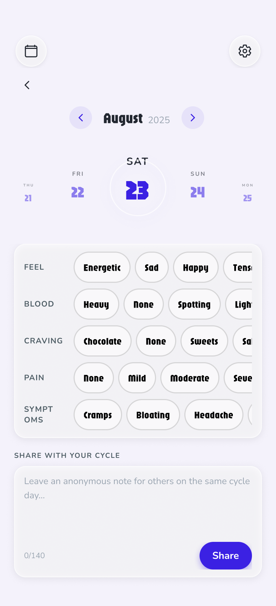
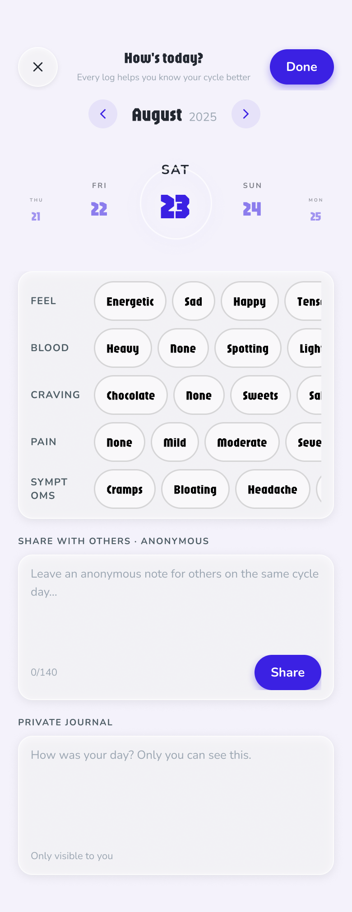
The month view paints the predicted period as a soft coral band and tints the rest of the month by phase — follicular, ovulation, luteal. Logged days carry a tiny progress ring under the date.
What it never does: flag a late or irregular cycle as “abnormal.” That single pattern — the cycle regularity imperative — was the most documented anxiety in the research.
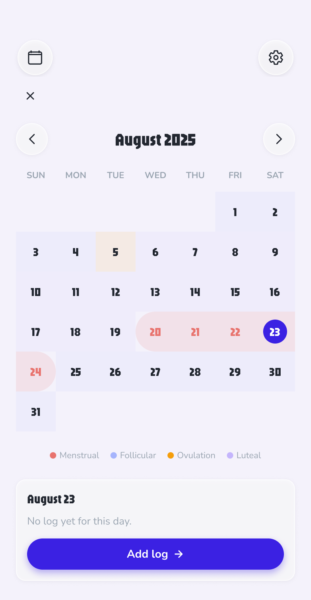
Hormone analytics is what paid apps lock behind subscriptions — and 30 of 37 people said they'd never pay. So the Pattern screen ships it free: four hormone curves across a 28-day loop, draggable, with the current day pinned.
Below it, “You're not alone” — anonymous one-line notes from others on the same cycle day. Community without profiles, feeds or follower counts.
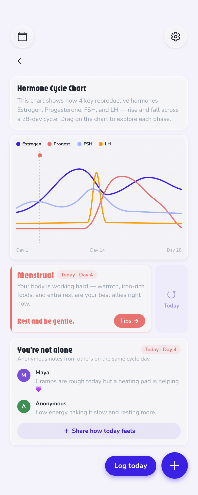
And when a 28-day curve isn't your reality — Finding F — home itself switches mode. Answer “Irregular” or “No period,” flag hormone therapy or perimenopause in onboarding, and instead of a pattern the app can't honestly draw, you get a screen built for your situation. These screens are also designed to make a quieter point: underneath the tracker, this is a journal — prediction may step back, but daily logging carries value for everyone.
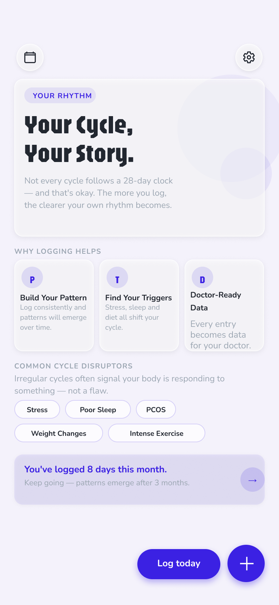
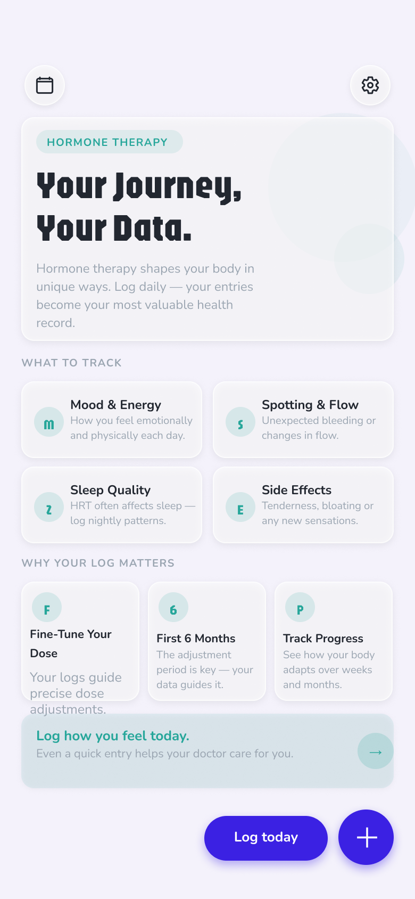
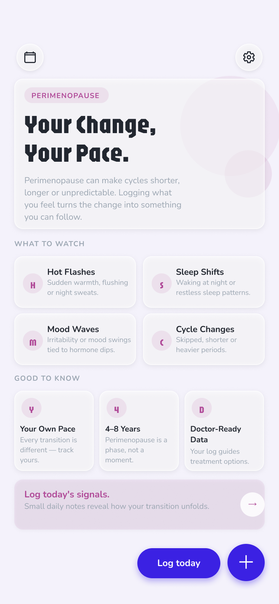
The content layer follows the same rule. Tips and the Blog are personalised too — both re-rank by the mode the app is in and the phase you're on: menstrual-phase rest advice for a regular cycle, trigger-focused reads for irregular ones, therapy-aware guidance on hormone therapy.
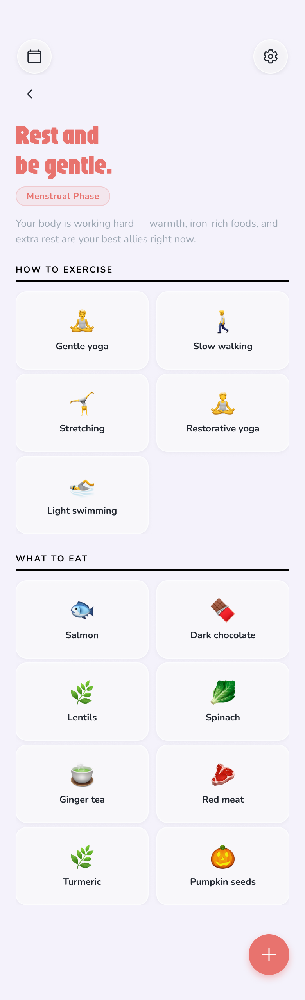
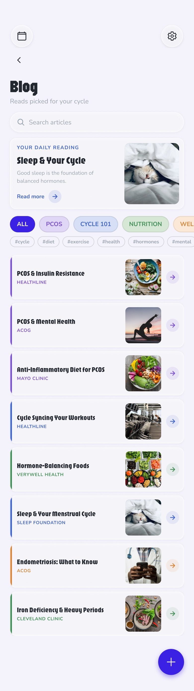
Stress sits at the top of the common cycle-disruptor list — Meditate is the rest moment built for it. The screen composes its visuals live, in tune with the music: each track paints its own palette and movement, and the whole field slows down as your session begins. The controls fade away after a few seconds and return with a tap — no feed, no streak, nothing to win. The third phone above is the real thing: tap Ready.
Cycle length and period duration as steppers, hormone-therapy as a first-class toggle that adds a Meds row to the daily log — and under About, one line that is the entire privacy policy: “All data stored locally on device.”
The design lives twice, deliberately. In Figma: a token library (color, space, radius variables), nine text styles, and 20+ components with variants — every screen assembled from instances, so a token change propagates everywhere. In code: a working React Native / Expo prototype sharing the same tokens 1:1. React Native is the framework production iOS and Android apps ship with — so what you see here isn't a click-through mockup; it's the actual app running on a phone. The arc date picker, the hormone chart and the meditation shader all run for real. Every screen on this page is exported straight from that synced design file.
37 survey responses across two languages can't prove anything — they point. The secondary research oversamples people unhappy enough to write reviews. And the design decisions above are hypotheses made testable, not tested: no usability sessions have validated them yet.
Five moderated sessions watching first-time setup on the working prototype; a prediction-accuracy diary study against the built-in Health app; and a focused deep-dive with irregular-cycle and perimenopause users — the strongest validated group in the research. On the product side, two steps: doctor-ready reports — one of the strongest payment signals in the data (10 of 37 said they'd pay for it), shipped nag-free per Finding C as the first paid feature — and a perimenopause mode: 8 of 37 respondents were 45+ (6 of 11 in the Turkish survey), built on top of the existing Home variants.